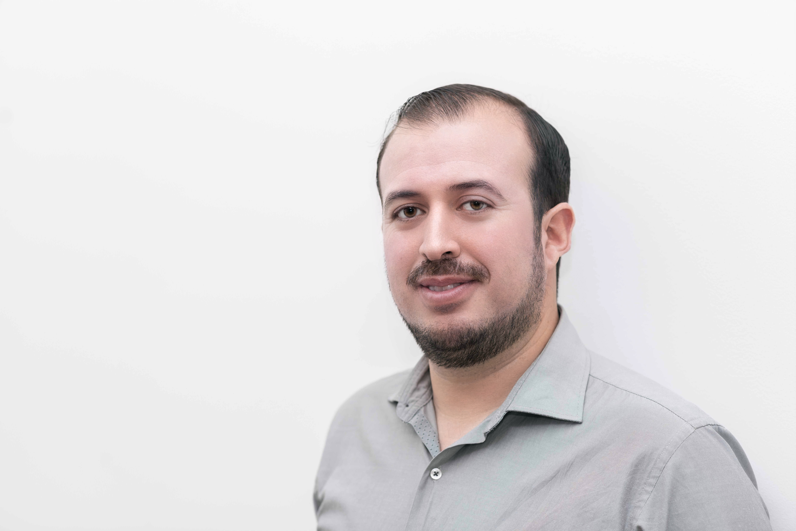

|  |
Emanuel SanchezSoftware EngineerPassion for building high-quality code and using automation improve the software development lifecycle |
Computer Engineering
Aug 2006 - Aug 2011
Universidad TecMilenio
MBA in Information Tecnologies
Jan 2019 - Sept 2020
| Invitae | San Francisco, Remote | |
| Software Engineer | Oct 2021 - July 2022 |
|
|
| Software Developer Engineer in Test | Jan 2020 - Oct 2021 |
|
| Test Automation | ⭐️⭐️⭐️⭐️⭐️ | Programming | ⭐️⭐️⭐️⭐️ |
| CI/CD | ⭐️⭐️⭐️⭐️ | Linux | ⭐️⭐️⭐️⭐️ |